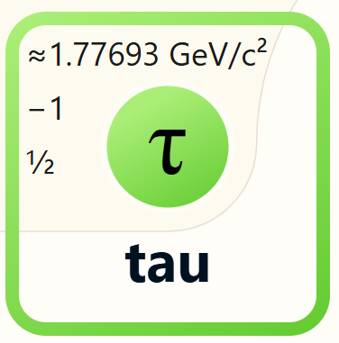

Image Credit: ATLAS Experiment
< Back
The tau particle is one of the three types of leptons in the Standard Model of particle physics. It is much heavier than the electron and muon, and it is unstable, decaying into lighter particles.

The tau particle is unique because it has a relatively long lifetime compared to other heavy particles, allowing it to travel further before decaying.
Image Credit: ATLAS Experiment